使い方
画面の名称は次の通りです。
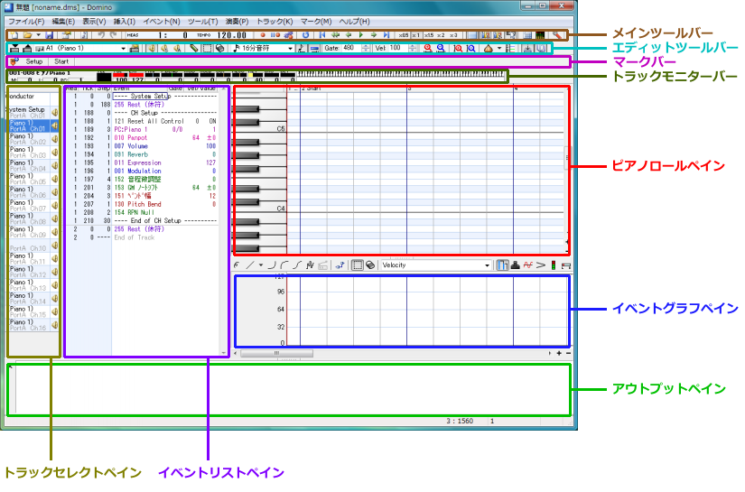
- メインツールバー
- 保存や再生に必要なボタンが詰め込まれています。
- エディットツールバー
- 編集や各作業に必要なボタンが詰め込まれています。
- マークバー
- 場所をマークしたり、マーク場所へシークしたりします。
- トラックモニターバー
- カレントトラック（チャンネル）の状態をモニターします。
- ピアノロールペイン
- 楽譜で言うところの五線譜に当たる部分です。ここにノート（音符）を貼り付けていきます。横が時間軸で、縦が音階軸です。
- イベントリストペイン
- カレントトラック（現在のトラック）のイベント一覧が表示されます。
- イベントグラフペイン
- 指定したイベントの値を抽出し、グラフで表示します。
- トラックセレクトペイン
- カレントトラックを切り替える部分です。初期状態では表示されません。
- アウトプットペイン
- 何かエラーなどが発生すると、ここに表示される場合があります。通常は閉じておいても構いません。
それではここから順番に使い方を説明したいと思います。
ノート（＝音符）をピアノロールにペタペタと置いていく前に、その音階の音を確認したい場合は、
ペンツール（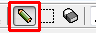）で確認したい音階部分を右クリックしてください。
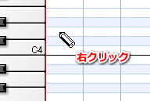
右クリック（ドラッグ）している間中、音が鳴り続けます。
絶対音感が無い人にとっては必要不可欠な機能ですね（＾＾；
ちなみにこの枠内で書いていることはどうでも良いことばかりなので、無視しても大丈夫です。
ノートを置く場合は、ペンツール（）を使って置きたい場所を左クリックしてください。
デフォルトの強さ（Velocity）と長さ（Gate）でノートが配置されます。
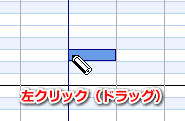
なお、左ドラッグ操作を行うと、ドラッグ中にその音階の音を確認する事ができます。
ドラッグを終えると、ノートが配置されます。
ドラッグ中に右クリックすると、配置をキャンセルする事ができます。
なお、１小節目にはMIDI機器を初期化するためのイベントが存在しますので、12:47 2010/10/19ノートを配置するのは２小節目以降にしてください。
ノートを適当に配置できたら、演奏してみましょう。
演奏するには、ツールバー上の[再生]ボタンをクリックするか、面倒な人は[スペース]キーを押してください。
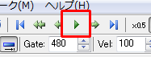
むしろスペースキーがメインですので、ツールバーのボタンが小さくて押しづらいという苦情は受け付けません（＾＾；
演奏が始まります。
入力した部分の最後までたどり着くと、自動的に演奏が止まります。
なお、演奏中にもう一度[再生]ボタンをクリック、または[スペース]キーを押すと、
演奏が止まります。
曲の途中から演奏したい場合は、演奏したい位置のヘッダー部分を左クリックしてください。
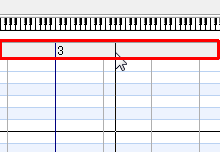
演奏位置を表す縦線が移動しますので、この状態で再生を行えば、ここから演奏が始まります。
既に置いたノートの長さ（Gate）を変えるには、ペンツール（）で
変えたいノートの右端にマウスカーソルを持って行ってください。
すると、マウスカーソルが左右矢印に変わりますので、この状態で左右へ左ドラッグしてください。
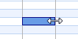
ドラッグを終えると、確定します。
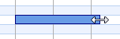
なお、ドラッグ中に右クリックすると、変更をキャンセルできます。
また、イベントリストペインの、該当するノートイベントのGate欄へ直接入力することでもGateを変更することができます。
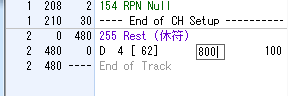
この場合、480が四分音符で、値を大きくするほど長くなります。
ちなみに、このイベントリスト部分へ直接入力する場合は、「480*4*4」のように四則演算（カッコも使えます）が出来ますので、
暗算苦手だ！って人は利用してください。
ベロシティを変えるにはイベントグラフペインを利用します。
イベントグラフはベロシティやテンポ、コントロールチェンジイベントのどれかを一種類だけ抽出して
グラフで表示＆編集ができるエリアです。
まずは[ベロシティ]ボタンをクリックして、ここにベロシティを表示させます。
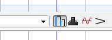
すると、ピアノロールに置いたノートと同じ横位置に、棒が表示されます。
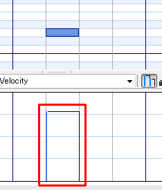
これがベロシティをグラフで表したもので、短いほど弱く（値が小さく）、長いほど強く（値が大きく）なります。
あとはペンツール（）を使って棒の左側に交わるようにマウスをドラッグします。
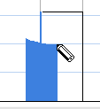
ドラッグを終了すると、その交わった位置の値がベロシティとして反映されます。
（例によってドラッグ中に右クリックすると変更をキャンセルできます。）
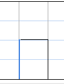
ちなみに、[アンカー表示]ボタンを押してアンカーを表示しておくと、
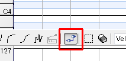
ベロシティ部分にアンカーが表示されますので、そこを上下にドラッグすることで調節する事も出来ます。
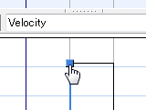
また、イベントリストペインの、該当するノートイベントのVel/Value欄へ直接入力することでもVelocityを変更することができます。
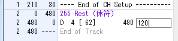
状況に合わせて使い分けてみてください。
置いたノートを後で移動させたい場合は、ペンツール（）を使って
移動させたいノート上へカーソルを移動させてください。
すると、マウスカーソルが左右上下矢印に変わりますので、この状態で左右上下へ左ドラッグしてください。
ドラッグを終えると、確定します。
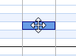
なお、ドラッグ中に右クリックすると、移動をキャンセルできます。
誤って編集してしまった場合などには、ツールバーの[元に戻す]ボタン（またはキーボードのCtrl+Z）を押すことで、編集内容を１段階元に戻すことができます。
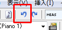
（元に戻せる回数は、メモリ使用量によって変わってきます）。
元に戻した編集内容を、やり直すにはツールバーの[やり直し]ボタン（またはキーボードのCtrl+Y）を押してください。
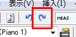
マウス操作でノートを置いたり移動したり、Gateを調節したりする際には、ある程度の間隔でスナップ（クォンタイズ）していたかと思います。
この間隔を長くしたり短くしたりするには、ツールバーの[クォンタイズ]コンボボックスを変更してください。
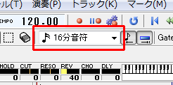
また、このスナップ機能のオン／オフを切り替える場合には、
ツールバー情報の[Tickクォンタイズ]ボタン、[Gateクォンタイズ]ボタンを押してください。
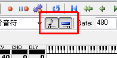
Tickクォンタイズは、ノートを置く際の位置、移動する際の位置などでクォンタイズするかを切り替えます。
Gateクォンタイズは、ノートのGateを変える際などでクォンタイズするかを切り替えます。
※ のちに説明する選択ツールでも、この設定が影響します。
なお、ドラッグ操作中に[Ctrl]キーを押すことで一時的にクォンタイズのオン/オフを切り替えることもできます。
置いたノートを削除するには、ペンツール（）で削除したいノートを左ダブルクリックしてください。
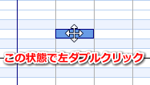
また、イベントリストペインの、該当するノートイベントをクリックして[Delete]キーを押すことでも削除することができます。
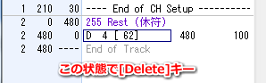
ピアノロールでノートを置くと、GateとVelocityが勝手に設定されていましたが、
その際には、そのトラックが持つ「ノートのGateおよびVelocityのデフォルト値」が、使用されています。
このデフォルト値はピアノロールやイベントリストでノートのGateやVelocityを変更した際に自動的にその値が記憶されます。
このデフォルト値を意図的に変えたい場合は、ツールバー上のVel欄、Gate欄を調節してください。
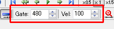
編集中、「このノートと同じGateとVelocityで新しいノートをいくつか追加したい」という場面に出くわした場合は、
そのノートをスポイトすることで、GateとVelocityのデフォルト値を変える事ができます。
スポイトするには、ノートを右クリックします。
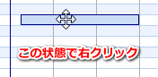
デフォルト値が変わりました。

あとはノートを配置していくだけです。
今まで、一個のノートを対象にした編集（移動・削除など）方法を説明してきましたが、
ここからは複数のノートを対象にした編集方法を説明します。
複数のノートを一度に移動させるには、選択ツール（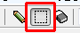）を使ってピアノロールを左ドラッグし、ノートを選択します。
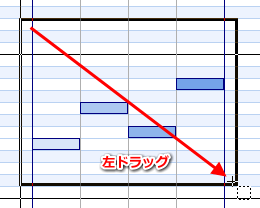
選択後、選択範囲内へマウスカーソルを持って行くと、カーソルが左右上下矢印になりますので、
この状態で左ドラッグしてください。
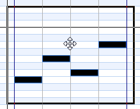
ドラッグを終えると、確定します。
なお、ドラッグ中に右クリックすると、移動をキャンセルできます。
複数のノートを削除するには、消しゴムツール（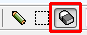）を使って消したい部分を左ドラッグします。
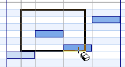
削除されました。
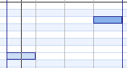
なお、選択ツール（）を使って消したい部分を選択した後で[Delete]キーを押しても同様に削除できます。
複数のノートを複製するには、選択ツール（）で複製したい場所を左ドラッグし、選択します。
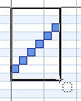
キーボードの[Ctrl+C]キーを押してください。
これでクリップボードに内容がコピーされます。
（選択範囲を右クリックして出てくるメニュー内から[コピー]を選んでもＯＫです。）
貼り付けたい位置に演奏位置を設定してください。
（ペンツールの場合はヘッダーを左クリック、選択ツールの場合は、ピアノロール上を左クリック）。
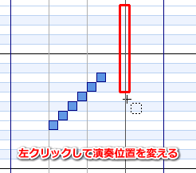
キーボードの[Ctrl+V]キーを押してください。
内容が貼り付けられます。
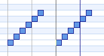
ちなみに、選択ツールで選択範囲上を左ダブルクリックすると[コピー]、
選択範囲外を左ダブルクリックすると[貼り付け]が行われますので、キーボードが面倒だという人はこちらの操作もお試しください。
近い場所へ複製する場合には、コピー＆ペーストよりも効率の良い方法があります。
選択ツール（）で複製したい場所を左ドラッグし、選択します。
Ctrlキーを押しながら、選択範囲上を左ドラッグしてください。
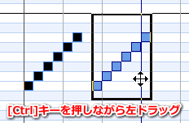
複製を移動することができます。
イベントグラフでVelocityを調節する際、同じタイミングで置かれているノートがあると
全て調節されてしまいます。
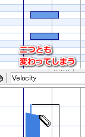
「このノートのVelocityだけを変えたい！」という場合、
もしそのノートの数が少ない場合（１～２個？）は、ペンツール（）でそのノートを右クリックしてください。
すると、イベントリストでそのノートのVelocity欄にカーソルが移動しますので、この状態でキーボードから数値を直接入力してください。
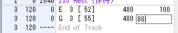
もし対象のノートが多数ある場合は、変えたいノートだけを選択ツール（）を使って選択してください。
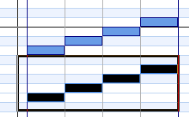
次にペンツール（）を使ってイベントグラフへVelocityを書き込んでみてください。
選択したノートのVelocityだけが変わります。
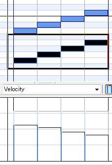
複数のノートのGateやVelocityを+10したい、というような場合には、
選択ツール（）で調節したいノートを選択します。
選択範囲内を右クリックし、メニューから[一括変更]を選びます。
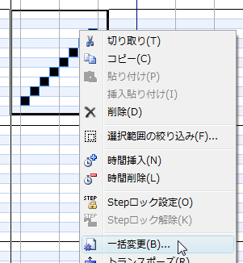
[一括変更]画面が表示されます。
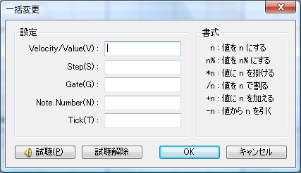
ここで、例えば全てのGateを240にしたい場合は
Gate欄に「240」と入力して[OK]ボタンを押してください。
ノートのGateが240になります。
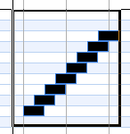
例えばGateを今の状態から2倍にしたい場合は、
Gate欄に「*2」と入力して[OK]ボタンを押してください。
例えばGateを今の状態から+20したい場合は
Gate欄に「+20」と入力して[OK]ボタンを押してください。
このように値の直指定から相対指定まで様々な調節ができます。
「長いノートをいくつか置いたけど、この位置で止まって欲しい」という場合には、止めたい位置へ演奏位置を移動させ（ヘッダーを左クリック）、
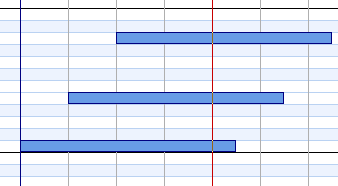
[イベント]メニューから[スライス（切り捨て）]を選んでください。
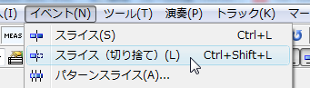
各ノートのGateが演奏位置で調節されます。
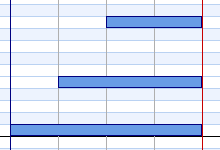
なお、[スライス]機能の方は、１つのノートを演奏位置で２つに分断する機能です。
また、矩形選択で範囲を指定してから実行すると、指定した音階範囲のみを処理対象にする事ができます。
さらには、[環境設定]の[全般]にて[スライスされた左側ノートのGate]を調節することで、分断された左側ノートのGateを短くすることも可能です。
ギターストロークのような事をやりたい場合には、選択ツール（）でストロークさせたいノートを選択します。
次に、選択範囲上を右クリックして[ストローク]を選んでください。
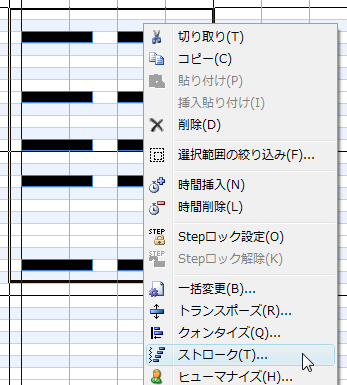
[ストローク]画面が表示されます。
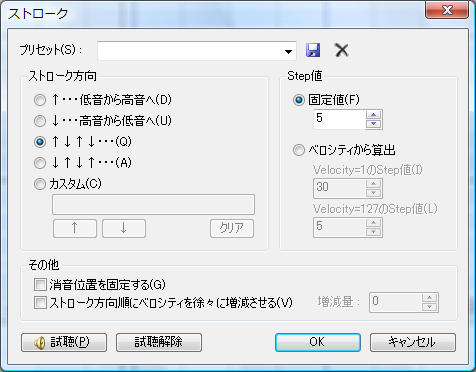
ここで、ストロークさせたい方向（ダウン・アップ）やStep値を指定して[OK]ボタンを押してください。
ノートのタイミングがずれます。
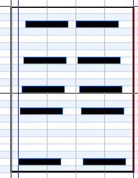
例えば、長いGate、短いGateのノートが連続して置かれている状態で、長いGateのノートだけを一括して変更したい場合があるとします。
普通に選択しただけでは、短いGateも一緒に選択＆処理されてしまいます。
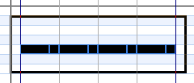
この状態で選択範囲上を右クリックして[範囲の絞り込み]を選んでください。
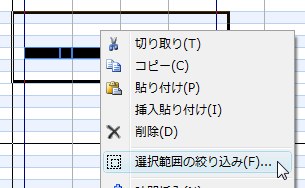
[範囲の絞り込み]画面が表示されます。
上の例で言うとGateの範囲を適当に指定して[OK]ボタンを押せば、長いGateのノートだけを選択する事ができます。
（この後で[一括変更]機能なりコピペなりをすれば、選択されているノートだけが処理されます）
複数のノートをまとめて１オクターブ下げたり上げたりするには、
選択ツール（）でノートを選択し、選択範囲上を右クリックして[1オクターブ下げる][1オクターブ上げる]を選んでください。
ペンツールと選択ツールは、ピアノロール上を右ダブルクリックすることで相互に切り替えることができます。
※ ペンツールと選択ツールにそれぞれショートカットキーを割り当てることも可能です。
パートの楽器を変えるには、イベントリスト上にあるプログラムチェンジイベント（紫色のイベント）をダブルクリックします。
このイベントは「ProgramChange」と表示されていたり、「PC:（楽器名）」というように表示されていたりします。
[プログラムチェンジイベントのプロパティ]画面が表示されます。
マップ、ＰＣ、バンクを指定して[OK]ボタンをクリックしてください。
パートの音色が変わります。
パートの音量やパンポットを変えるには、イベントリスト上の最初の方にある「Volume」や「Panpot」など、それらしきイベントのVel/Value欄をクリックし、
キーボードから数値を入力してください。
（[Enter]キーで確定します。）
※ 音源定義ファイルによって表記や色は異なります。
先ほどは曲の先頭で一度だけパートの音量などを変えるだけでしたが、曲の途中でパートの音量を変えるには、
イベントグラフの表示を「Volume」に切り替えます。
（音源定義ファイルによって表記は異なります。）
イベントグラフ部分に、パートの音量が時間によってどう変化するかが、折れ線で表示されます。
そして、ペンツール（）を使って、変えたい位置までマウスカーソルを移動させます。
（フリーハンドツールを直接クリックしてもペンに持ち替えることができます。）
ステータスバーの右端に表示されている値を参考にし、書き込みたい場所で左クリックします。
これでパートの音量を変えるイベントがその位置へ挿入されました。
ちなみに、[アンカー表示]ボタンを押してアンカーを表示しておくと、
一度置いたイベントをペンツールで左右上下に移動することもできます。
Ctrlキーを押しながらドラッグするとTickのクォンタイズ機能が働きます。
Shiftキーを押しながらドラッグするとTickの固定機能が働きます。
また、左側の数値部分をマウスでクリックすることで、演奏位置へイベントを挿入することもできます。
状況に応じて使いやすい機能をお使いください。
ピッチベンドやエクスプレッションを連続的に入力するには、イベントグラフの表示を
ピッチベンドやエクスプレッションに切り替えます。
次に使いたい直線・曲線を選びます。
イベントグラフ部分へ左ドラッグすると、どんな感じで入力されるのかが見られますので、
良い場所でドラッグ操作を終了してください。
Ctrlキーを押しながらドラッグするとTickのクォンタイズ機能が働きます。
ドラッグ中に右クリックをすると、入力をキャンセルできます。
ドラッグ操作を終えるとイベントが連続的に挿入されます。
導入直後はイベントグラフペインの高さが最適なサイズになっていますが、
ピッチベンドを細かく入力しようとした場合は、これでは狭い場合があります。
そんな時には、イベントグラフペインの少し上の「つまみ」を上下へドラッグする事で
イベントグラフの高さを調節することができます。
元の最適なサイズに戻すには、「つまみ」を左ダブルクリックしてください。
なお、挿入する間隔は直線ツールの右側の[▼]ボタンを押して出てくるメニュー内の[間隔設定]から変更できます。
先ほどのマウスによる直線・曲線の入力方法では、マウスの微妙な動きに左右されてしまって、きちんとしたデータを入力したい人にとっては困難な方法といえます。
そんな場合には、選択範囲へ直線や曲線を入力する機能を使うと、良いかもしれません。
この機能を使うには、まず入力したいデータの種類をイベントグラフへ表示させます。
選択ツール（）でイベントグラフ部分を選択します。
ツールバー上の[選択範囲へ直線・曲線を入力]ボタンを押してください。
[選択範囲へ直線・曲線を入力]画面が表示されます。
この画面では選択範囲の左端から右端まで、直線や曲線を入力する事ができます。
左側のS.Valueと右側のE.Valueを指定してください。
（マウスで三角マークをドラッグすることも可能です。）
Step値（間隔）や直線・曲線式を設定して[OK]ボタンを押してください。
データが入力されます。
なお、ピッチベンド入力の際には、値による指定だけでなく、キー（半音）単位で指定する欄が表示されます。
既に入力してあるピッチベンドカーブなどをコピーするには、コピーしたいイベントをイベントグラフへ表示させ、
選択ツール（）でイベントグラフ部分を選択します。
キーボードの[Ctrl+C]キーを押します。
（選択範囲を右クリックして出てくるメニュー内から[コピー]を選んでもＯＫです。）
これでクリップボードにイベントがコピーされました。
あとは、貼り付けたい場所を選択ツールで左クリックし、演奏位置を調節します。
キーボードの[Ctrl+V]キーを押すと、クリップボード内のイベントが貼り付けられます。
ちなみに、選択ツールで選択範囲上を左ダブルクリックすると[コピー]、
選択範囲外を左ダブルクリックすると[貼り付け]が行われますので、キーボードが面倒だという人はこちらの操作もお試しください。
編集するトラック（カレントトラック）を変えるには、ツールバーのトラック切り替えコンボボックスをクリックしてトラックを指定します。
また、[次のトラック][前のトラック]へ移動することもできます。
（ショートカットキーでは[Ctrl+PageDown][Ctrl+PageUp]）
[トラックバー]と言うトラックを切り替えるためのバーを表示させることで、切り替えやすくすることもできます。
[トラックバー]が見づらい場合は、[トラックセレクトペイン]を表示しておくことで、同様に切り替えが可能です。
[トラックセレクトペイン]の配置場所は[環境設定]から変えることもできます。
ピアノロールエリアへ他のトラックの内容を同時に表示させることができます。
他のトラックのノートを表示させるには、ツールバー上の[オニオンスキン]ボタンの右側にある[▼]ボタンをクリックし、
表示したいトラックを選びます。
ピアノロールに前のトラックを表示
ピアノロールに一つ前のトラックの内容を表示します。
ピアノロールに次のトラックを表示
ピアノロールに一つ後のトラックの内容を表示します。
ピアノロールに指定のトラックを表示
トラックを指定して、その内容を表示します。実行すると[トラック参照]画面が表示されますが、Ctrl+左クリックなどで複数指定することもできます。
ピアノロールに同じ色のトラックを表示
ピアノロールに同じ色のトラックを表示します。
トラックの色は[トラックのプロパティ]画面の[オニオン色]や、トラックセレクトペインの右クリックメニューから設定できます。
なお、[設定をトラック毎に記憶する]がオンの場合は、オニオンスキンの設定をトラック別に記憶します。
オフにすれば、全トラックで共通の設定にすることができます。
[トラックバー]からオニオンスキンを設定する事もできます。
表示したいトラックを右クリックしてください。
Ctrl+右クリックでは、トラック表示のON/OFFを切り替えることもできます。
（対象のトラックには下線が付きます。）
同様に、[トラックセレクトペイン]からもオニオンスキンを設定することができます。
Shift+左クリックで、そのトラックのみを表示し、
Ctrl+左クリックで、そのトラックの表示/非表示を切り替えることができます。
テンポは、通常のトラックではなく、「コンダクタートラック」と呼ばれる特別なトラックにのみ
記述することができます。
テンポを変えるには[トラック切り替え]コンボボックスからConductorを選び、コンダクタートラックをカレントトラックにします。
イベントリストの最初の方にテンポイベントが存在しますので、Vel/Value欄をクリックしてキーボードから値を直接入力してください。
曲の途中でテンポを変えたい場合には、コンダクタートラックでペンツールを使い、イベントグラフ部分へ書き込んでください。
もちろん直線ツールなどで徐々に早くしたり遅くしたりすることもできます。
ほとんどの機器は10チャンネルがリズムトラックになっているはずですのでDominoでも10チャンネルはあらかじめリズムトラックになっています。
リズムトラックを編集するには[トラック切り替え]コンボボックスから「A10」を選び、カレントトラックを変更してください。
他のトラックではピアノロールに鍵盤画像が表示されていましたが、リズムトラックでは楽器名が表示されます。
あとは通常のトラック同様に編集が可能ですが、ノートのGateデフォルト値は固定（定義ファイル側で設定されています）というのが
少し異なる点です。
また、ノートを配置した際には、○マークが表示されます。
なお、ProgramChangeをダブルクリックしてドラムセットを変更する場合には、
[モード]を[ドラムセットリスト]にしてから音色を選択してください。
イベントグラフ部分にてVelocityを調節したい場合、同じタイミングで置かれているノートは
全て調節されてしまいます。
（バスドラだけ変えたいのに、スネアも変わってしまう、という現象が起きます。）
「
一部のノートだけVelocityを変えるには」と同じ方法で解決できますが、
リズムトラックの場合はもう少し楽な方法がありますのでそれを説明いたします。
左側の楽器名を左クリック（複数の場合はドラッグ）すると、その音階を選択することができます。
この状態でイベントグラフ部分へVelocityを書き込めば、選択した音階のVelocityのみが変わります。
ここの説明はハードウェア音源に「SC-8850」、音源定義ファイルに「SC-8850」を使用している方のみご覧ください。
デフォルト10チャンネルは自動的にリズムトラックになっていますが、
SC-8850の場合は他のトラックをリズムトラックとして扱うことができます。
ここでは、11チャンネルを「Drum1」または「Drum2」にする方法を説明します。
まずは11チャンネル(A11)をカレントトラックにします。
SC-8850の初期状態では11チャンネルのパートモードは普通のパート(Norm)ですので、まずはここを
「Drum1」または「Drum2」に変更してやる必要があります。
パートモードを変更するには、イベントリストの一番上のイベントをクリックし、
[挿入]メニューから[コントロールチェンジ]を選びます。
変なイベントが挿入されますので、そいつのStep値を適当な値に変更してください。
そのイベントをダブルクリックします。
[コントロールチェンジイベントのプロパティ]画面が出ますので、
マクロ部分からPartEdit→Part Modeを選んでください。
これでMIDI機器側の設定はＯＫです。
次にDomino側でこのトラックをリズムトラックとして扱うように設定します。
イベントリストのProgramChangeイベントをダブルクリックします。
[プログラムチェンジイベントのプロパティ]画面が表示されますので、
[モード]を[ドラムセットリスト]にしてから音色を選択してください。
[トラック情報の更新]にチェックを入れて（最初から入っていると思いますが）、
[OK]ボタンを押してください。
これでカレントトラックの音色が設定でき、ついでにトラックがリズムトラックとして設定されます。
カレントトラックのトラック名を変更するには、ツールバーの[トラックのプロパティ]ボタンを押してください。
[トラックのプロパティ]画面が表示されますので、トラック名を入力して[OK]ボタンを押してください。
ピアノロールを表示しているモードでは、カレントトラックの内容しか見られないため、全体のトラックの見通しが悪いです。
トラックを追加したり削除したりするには、[トラックリスト]モードにしてから行うと解りやすいです。
（[トラックセレクトペイン]でもトラックの追加などが行えます。）
[トラックリスト]モードにするには、キーボードの[Tab]キーを押します。
（もう一度押すと、ピアノロールがまた出ます）
追加したい場所のトラック名部分を右クリックし、[トラックの追加]を選んでください。
そのトラックの次に新しいトラックが追加されます。
追加されたトラックを右クリックし、[トラックのプロパティ]を選び、
名前やポート、チャンネルを設定してください。
トラックの中身は空っぽですので、初期化イベント等を入れる必要があります。
もし、初期化用のイベント込みでトラックを追加したい場合は↓の「１ポート分のトラックを一気に追加するには」を参照してください。
新規作成状態では、あらかじめポートA分の約１６トラックが用意され、初期化用のイベントなども全て含まれています。
こうした初期化用の情報（デフォルトトラック情報）はポートAに指定されている音源定義ファイルに記述されており、その情報をもとにトラックを作成しています。
Dominoでは、そうした初期化用の情報を元にトラックを一気に追加する事もできます。
デフォルトトラックを追加するには、適当なトラックを右クリックし、[デフォルトトラックの追加]を選んでください。
音源が指定されているポート一覧が表示されますので、追加したいポートを選んでください。
すると、右側にデフォルトトラック情報が表示されますので、必要なトラックにチェックを入れ、[OK]ボタンを押してください。
一番下にトラックが追加されます。
トラックを削除するには、[トラックリスト]モード([Tab]キーで切り替え)にしてから削除したいトラック名部分を右クリックし、
[トラックの削除]を選んでください。
トラックの順番を変えるには、[トラックリスト]モード([Tab]キーで切り替え)にしてから、並べ替えたいトラックのトラック名部分を上下に左ドラッグしてください。
ドラッグ操作が完了すると確定します。
（ドラッグ操作中に右クリックすると、キャンセルできます。）
複数のトラックにまたがって、各イベントの内容をコピー・削除・貼り付けするには、
[トラックリスト]モード([Tab]キーで切り替え)にしてから、選択ツールや消しゴムツールで
トラックの内容を選択し、コピーや削除等を行ってください。
なお、全トラックを処理したい場合は、ヘッダー部分を選択すると便利です。
まずは[トラックリスト]モード([Tab]キーで切り替え)にしてください。
左側にトラック名と、スピーカーアイコンが表示されていると思います。
このスピーカーアイコンが表示されているトラックは、演奏をするトラックという意味になります。
このスピーカーアイコンのエリアを左クリックすると、演奏する/しないを切り替えることができます。
スピーカーアイコンのエリアを右クリックすると、ソロ演奏/全トラック演奏を切り替えることができます。
なお、通常のピアノロール画面でも、ツールバー上で[ソロ演奏（Sマーク）]、[全トラック演奏(Aマーク)]を指定する事ができます。
拍子にマークを設定することで、演奏位置の変更が楽にできるようになります。
イントロ=「I」、Aメロ＝「A」、Bメロ＝「B」、サビ＝「S」などと付けておくといいかも。
マークを付けるには、付けたい位置へ演奏位置を設定し、[マークの追加]ボタンをクリックしてください。
[マークの追加]画面が表示されますので、名前を入力して[OK]ボタンを押してください。
マークバーに先ほど追加したマークが表示されます。
このマークバーのマークをクリックすると、演奏位置がマークした位置に移動します。
マークの削除やマークのラベルを変えるには、マークバー上のマークを右クリックしてください。
デフォルトの状態では４／４拍子になっていますが、これを変えるにはコンダクタートラックの拍子イベントをダブルクリックします。
[拍子イベントのプロパティ]画面が表示されますので、設定を行い[OK]ボタンをクリックしてください。
編集画面に反映されます。
もし曲の途中で拍子を変えたい場合（または拍子イベントが無い場合）は、変えたい小節に演奏位置を移動し、[挿入]メニューの[拍子]をクリックしてください。
なお、ここで挿入した拍子情報はコンダクタートラックに挿入されますので、再編集や削除はコンダクタートラックで行ってください。
曲名などを設定するには、ツールバーの[曲のプロパティ]ボタンを押してください。
[曲のプロパティ]画面が表示されます。
曲名や著作権を入力して[OK]ボタンを押してください。
ウィンドウのタイトルバーに曲名が表示されます。
（SMF書き出しの際にこの曲名や著作権情報が保存されます。）
イベントリストのイベントをクリックして、イベントリストにフォーカスがある状態（四角カーソルが黒い状態）で
[挿入]メニューから[コメント]を選ぶと、イベントリストのカーソル位置にコメントイベントが挿入されます。
ピアノロール側で演奏位置を設定してから、[挿入]メニューから[コメント]を選ぶと、演奏位置にコメントイベントが挿入されます。
コメントイベントは、イベントリストにメモを残しておきたい場合に使ってください。
コメントイベントのイベント欄をクリックしてキーボードから文字を入力すると、コメント内容を変更できます。
イベントリストのイベントをクリックして、イベントリストにフォーカスがある状態（四角カーソルが黒い状態）で
[挿入]メニューから[エクスクルーシブ]を選ぶと、イベントリストのカーソル位置にエクスクルーシブイベントが挿入されます。
ピアノロール側で演奏位置を設定してから、[挿入]メニューから[エクスクルーシブ]を選ぶと、演奏位置にエクスクルーシブイベントが挿入されます。
エクスクルーシブの内容を変更するには、（イベントリスト上で直接入力もできますが）イベントをダブルクリックしてください。
[エクスクルーシブイベントのプロパティ]画面が表示されます。
説明はこの画面内に出ていますので、そちらを読んでください。
内容を設定して[OK]ボタンを押してください。
通常のコントロールチェンジと言えば、コントロールチェンジ番号０～１２７があって、その番号によってボリュームやパンポットを設定するメッセージですが、
Dominoではこのコントロールチェンジを更に拡張して、１２８番以降を自由に定義し、使用することが可能になっています（番号の上限は
音源定義ファイルの仕様を参照してください）。
これにより、通常のコントロールチェンジと同じ手軽さでマスターボリュームやEFX等、
機器固有のパラメータを調節することができます。
イベントリストのイベントをクリックして、イベントリストにフォーカスがある状態（四角カーソルが黒い状態）で
[挿入]メニューから[コントロールチェンジ]を選ぶと、イベントリストのカーソル位置にコントロールチェンジが挿入されます。
ピアノロール側で演奏位置を設定してから、[挿入]メニューから[コントロールチェンジ]を選ぶと、演奏位置にコントロールチェンジイベントが挿入されます。
コントロールチェンジの番号や値を設定するには、イベントをダブルクリックしてください。
[コントロールチェンジイベントのプロパティ]画面が表示されますので、設定したいマクロと値を設定して[OK]ボタンを押してください。
複数のコントロールチェンジマクロを一気に挿入するには、挿入したい位置を演奏位置として設定し、
[挿入]メニューから[コントロールチェンジ（複数）]を選んでください。
[コントロールチェンジイベント（複数）の挿入]画面が表示されます。
挿入したいマクロにチェックを入れて[OK]ボタンを押してください。
（フォルダ部分にチェックを入れると、その中の全マクロがチェックされます。）
※ 画面はSC-8850の音源定義ファイルを使った例です。
イベントが挿入されました。
特定の部分だけをループ演奏するには、ループさせたい範囲を選択してください。
次に、ツールバー上の[ループ]ボタンを押します。
これであとは再生するだけで、範囲を繰り返し演奏するようになります。
一時的にループ再生を行うには、上記のやり方が手っ取り早いですが、定期的に同じ箇所をループ演奏させたい場合、毎回選択しなおすのは面倒です。
そういった場合は、ループさせたい範囲を選択してから、[演奏]メニューの[ループ]→[選択範囲からループマーカーを作成]を選んでください。
ヘッダーにループマーカーが表示されます。
ループマーカーの始点と終点はマウス左ドラッグで動かすことができます。
ループ範囲として、選択範囲とループマーカーのどちらを優先させるかは[演奏]メニューの[ループ]→[選択範囲優先]オン/オフで切り替えられます。
MIDI音源は内部でいろいろな値を保持しています。
例えばDominoであるパートを再生し、ピッチベンド4000を送信したところで演奏を止め、
他の場所から再び演奏を始めたとすれば、音源内部のピッチベンド値は4000のままですので、
意図しない音程で演奏されることになります。
もちろんピッチベンドだけでなく、ボリュームやパンポットも同様で、
こちらが意図した通りに演奏できない場合というのは多々あります。
Dominoでは現在の演奏位置と、MIDI音源の状態をある程度合わせることが可能になっています。
状態を合わせるには、[演奏]メニューから[MIDI機器の状態を合わせる]を選んでください。
状態が合うパラメータは音源定義ファイルによって異なりますが、
プログラムチェンジイベントやボリューム、パンポット、エクスプレッション等は有効です。
なお、自動で状態を合わせるようにすることもできます。
自動化するには、[演奏]メニューから[MIDI機器の状態を自動的に合わせる]を選んでください。
すると、演奏位置を動かした時点で、自動的に[MIDI機器の状態を合わせる]処理が実行されます。
コントロールチェンジイベントのGate欄やVel/Value欄、およびテンポには、変数を使用する事が可能です。
「変数」というよりは、「定数」の使い方にとどめておいた方が良いとは思います。
試しに作ってみたモノの、あんまり使い勝手はよくないかもしれません。
例えばＡメロ→Ｂメロ→サビ→Ａメロ→Ｂメロ→サビ
というような曲構成があったとして、Ａメロの時は音量50、Ｂメロの時は音量60にしたいとします。
変数を使わずに、普通に音量を設定する場合、
Ａメロ（Vol=50）→Ｂメロ（Vol=60）→サビ→Ａメロ（Vol=50）→Ｂメロ（Vol=60）→サビ
という感じでそれぞれの場面でイベントを挿入するかと思います。
ただ、この場合はＡメロの音量を55に変えたくなった場合、２箇所を修正しないといけません。
（まだ2箇所なら良いですが、これが沢山になると大変）
そこで、変数を使って「a_vol = 50」、「b_vol = 60」とあらかじめ定義しておいて、
それをVolume（Part Level）イベントの値に指定してやれば、
後でＡメロのボリュームを変えたくなったときに、「a_vol = 55」と、修正するだけで済みます。
実際に変数を定義するには、[編集]メニューから[変数表]を選びます。
メモリ中に存在する全変数が表示されますので、
「変数名 = 値」という書式で使用したい変数を一行ずつ書き込んでいってください。
（変数名は全角と半角は区別しますが、半角の大文字・小文字は区別しません。というか小文字になっちゃいます。）
あとは、コントロールチェンジイベントのVel/Value欄にその変数名を直接入力するだけで使用することができます。
なお、この変数の有効範囲はそのファイル内の全トラックですので、単純にa_volみたいな名前をそこで使ってしまうと、
他のトラックで似たような事をしたい場合に、困るかもしれません＾＾；；
ちなみに変数イベントもありますが、こちらは演奏途中に変数を定義したり計算しなおしたりする事ができるイベントです。
ただし、[MIDI機器の状態を合わせる]機能との相性が良くないので、そちらの機能を使う場合は、変数イベントを使うのは避けた方が良いでしょう。
MIDIキーボードなどからリアルタイムに演奏した内容を、データとして取り込むことができます。
（マイクから音声を録音するような機能ではありません。）
リアルタイム録音をするには、ツールバー上の[リアルタイム録音]ボタンを押してください。
[リアルタイム録音]画面が表示されますので、演奏範囲やテンポを設定して[録音]ボタンを押してください。
演奏が始まりますので、MIDIキーボード等から入力を開始してください。
演奏が終わるか、[停止]ボタンを押すと、入力された内容が画面上に反映されます。
ステップ録音とは、MIDIキーボードから入力された内容をデータとして取り込む機能です。
リアルタイム録音とは異なり、音符の長さ（間隔）をあらかじめ指定しておきますので、
自由なタイミングで録音ができます。
ステップ録音をするには、ツールバー上の[ステップ録音]ボタンを押してください。
[ステップ録音]画面が表示されますので、Stepを指定してMIDIキーボードから入力を開始してください。
なお、発音中に[次へ/タイ][前へ]ボタンを押すと、入力されたノートのGateを増加・減少させる事ができます。
（[次へ/タイ][前へ]ボタンの代わりにピッチベンドを傾けることでも同様の処理が行われます。）
また、[PCキーボード]ボタンを押すことで、MIDIキーボードを使わずともPCのキーボードからステップ録音する事ができます。
ショートカットキーなどは[設定]ボタンから変更することができます。
試しに音を鳴らしたい場合は[Ctrl]キーを押しながら入力を行ってください。
（[Ctrl]キーを押している間はイベントは挿入されません。）
MIDI機器などから送信されたエクスクルーシブデータをDominoで取り込むには、ツールバー上の[エクスクルーシブ受信]ボタンをクリックします。
[エクスクルーシブ受信]画面が表示されますので、受信するmidi-inデバイスとstepを設定したら、
MIDI機器などからのエクスクルーシブデータ送信を開始してください。
受信に成功すると、画面へエクスクルーシブイベントが挿入されます。
編集した内容を保存しておくには、ツールバー上の[保存]ボタンを押します。
保存先を聞いてきますので、保存したい場所とファイル名を指定して[保存]ボタンを押してください。
ちなみに、ここで保存されるファイル形式はDomino専用の独自シーケンスデータ(Domino Sequence Data)になります。
このまま他のプレイヤなどで再生することはできません。
全ての編集内容を大事にとっておくための保存です。
過去に保存したファイルやmidiファイルを開くには、ツールバー上の[開く]ボタンを押します。
どのファイルを開くのか聞かれますので、指定して[開く]ボタンを押してください。
ファイルが読み込まれます。
midファイル(Standard MIDI File)はFormat0とFormat1を読むことができます。
ちなみに、最近使ったファイルを開くには、[開く]ボタンの右側にある[▼]ボタンを押してください。
トラック毎にトラックの終端位置を示すイベント（End of Track）が存在するのですが、
全トラックで一番時間的に最後にあるEnd of Trackが曲の終端位置となります。
演奏が鳴り終わったのに、そこから演奏がしばらく終わらなかったり、
逆に曲の終端位置が早すぎて（midiファイルとして書きだした後で）音が鳴り終わってないうちに演奏が終わってしまったりする場合、
演奏位置を調節することで解決できます。
曲の終端位置を調節するには、終端位置にしたい位置を演奏位置に設定します。
次に[イベント]メニューから[End of Trackの調節]を選びます。
これで演奏位置に全トラックのEnd of Trackイベントが再配置されます。
（もちろん、後ろにイベントがあれば再配置できませんが＾＾；）
編集中の音楽データをmidファイル(Standard MIDI File)として書き出すには、
ツールバー上の[SMF書き出し]ボタンを押します。
書き出し先を聞いてきますので、場所とファイル名を指定して[保存]ボタンを押してください。
midファイルとして書き出されます。
編集中Dominoがヌルポインターアクセスして落ちるだとか、
家族がドライヤーと電子レンジ使ってブレーカーが落ちるだとか、
編集中のファイルと言うのはそうした外的要因によって、消えてしまう可能性があります。
もちろんこまめに[保存]していれば良いのですが、なかなかそこまで頭が回らない事もあります。
そこで、バックアップ機能を使うと、定期的に保存処理を自動実行します。
バックアップ機能を使うには、ツールバー上の[環境設定]ボタンを押し、
[環境設定]画面の左側で[バックアップ]を選んでください。
[定期バックアップを行う]にチェックを入れ、間隔やファイル名、保存先を指定して[OK]ボタンをクリックしてください。
これで指定した時間おきにファイルの保存が行われます。
メインメニューに表示されている全てのコマンドに対して、ショートカットキーを割り当てることができます。
ショートカットキーを割り当てるには、ツールバー上の[環境設定]ボタンを押し、
[環境設定]画面の左側で[ショートカットキー]を選んでください。
メニューと同様の内容がツリーとして表示されますので、割り当てたいコマンドを選んでください。
キーボードから割り当てたいキーを押すと、その選んだコマンドに対してキーを割り当てることができます。
キーは一つのコマンドに対して複数割り当てることができます。
キーをクリアしたい場合は[クリア]ボタンを押してください。
[初期化]ボタンを押すと、Domino導入時の設定に戻すことができます。
[ＯＫ]ボタンを押すと、設定内容が反映されます。
メインウィンドウに乗っているツールバーは、内容を自由にカスタマイズする事ができます。
ツールバーをカスタマイズするには、[表示]メニューの[ツールバー→カスタマイズ]を選んでください。
[ツールバーカスタマイズ]画面が表示されます。
まず、カスタマイズしたいツールバーをコンボボックスから選んでください。
使用したいコマンドを左側から探して、右側へドラッグ＆ドロップしてください。
（カテゴリコンボボックスを変えると、そのカテゴリのコマンドが出てきます）
コマンドを削除したい場合は、削除したいコマンドを選んで[削除]ボタンを押してください（またはコマンドを外側へドラッグ＆ドロップしてください）。
ツールバーの名前を変えたい場合は[ツールバー名]ボタンを押してください。
ツールバーを導入時の状態に戻したい場合は[リセット]ボタンを押してください。
[ＯＫ]ボタンを押すと、カスタマイズ内容が反映されます。
もし、アイコンの付いていないコマンドをツールバーに配置したい場合には、そのコマンドにアイコンを付けて！という感じで要望を出してください（＾＾；
ペンツールや選択ツールのマウス操作は自由にカスタマイズする事ができます。
例えば、導入時はペンツールで左クリックをするとノートを配置しますが、
左クリックはプレビューにして、左ダブルクリックでノートを置くようにする事ができます。
マウス操作をカスタマイズするには、ツールバー上の[環境設定]ボタンを押し、
[環境設定]画面の左側で[マウス操作 (1)]を選んでください。
マウス操作と動きの対応表が表示されますので、変えたい部分をクリックしてください。
選択肢が表示されますので、希望の動作を選んでください。
[OK]ボタンを押すと、内容が反映されます。
中クリック（＝ホイールクリック）は、マウスドライバによっては使用出来ない事があります。
マウスドライバ側の設定を変えることで中クリックが使用可能になることがあります。
イベントグラフ上へ[直線]や[早い曲線]を使って直線や曲線を入力することができますが、
この直線や曲線は自由に式をカスタマイズすることが出来ます。
曲線や直線をカスタマイズするには、ツールバー上の[直線]ボタンの右側にある[▼]ボタンを押して出てくるメニューから[カスタマイズ]→[編集]を選んでください。
[曲線のカスタマイズ]画面が表示されます。
新しく直線・曲線を追加したい場合は[追加]ボタンを押して名前を入力してください。
左側の[曲線一覧]エリアで選んでいる内容が右側の[曲線設定]エリアに表示されます。
曲線の式を入力しプレビューを確認して良ければ[OK]ボタンを押してください。
なお、プレビューエリアでは、始点と終点をマウスドラッグで自由に動かすことができます。
ここのプレビュー画面と実際のイベントグラフでの画面では、X軸の単位が違うため、
あんまりアテにならないかもしれません・・・。
こうして作った曲線式をイベントグラフで利用するには、
[直線]ボタンの右側にある[▼]ボタンを押して出てくるメニューから[カスタマイズ]を選び、
使用したい曲線を選びます。
カスタマイズした曲線を頻繁に使う場合には、ツールバーのカスタマイズで[編集]アイコンを追加しておくと便利です。
場所に余裕が有る場合は、[直線・曲線]コンボボックスを追加しておくと更に便利です。
あとは直線などと同様にイベントグラフペインでマウスをドラッグすれば、その曲線で入力できます。